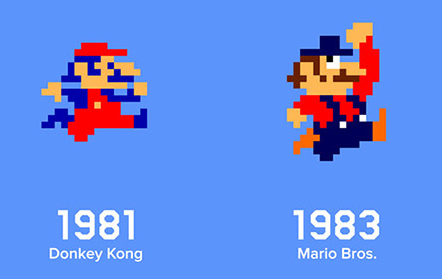

Tornant l’any 1985 amb la companyia japonesa Nintendo. Després del gran èxit de la seva Famicom, una consola de 8 bits que va ser llançada tan sols al Japó el 1983. Va veure l’oportunitat d’entrar al mercat estatunidenc aprofitant la crisi que hi havia en aquest, ho va fer creant la NES (Nintendo Entertainment System) consola amb les mateixes prestacions però que passaria a la història.
La NES venia amb el seu videojoc estrella Mario Bros, creat per Shigeru Miyamoto qui ja havia fet aparèixer prèviament a Mario al Donkey Kong sota el nom de Jumpman.

Bona part de l’èxit de la NES es deu al fet que Nintendo va decidir instal·lar un circuit a cada videoconsola i un altre d’addicional a cada cartutx, aquests cartutxos portaven unes llicències integrades que si el circuit de la videoconsola no detectava, no llegia el cartutx. Això va permetre a Nintendo regular els videojocs de la seva consola, obligant als seus col·laboradors a desenvolupar exclusivament per a ells i amb uns mínims requerits.
La consola va començar a créixer amb sagues que continuen avui en dia com The legend of zelda o Final Fantasy, també es va presentar el 1987 al mercat europeu on va va haver d’enfrontar-se als ordinadors del moment.

L’any 1985 la companyia japonesa Sega, famosa fins al moment pels seus jocs arcade.
Treu a la llum la Master System que dos anys més tard seria llançada als Estats Units i Europa, els jocs estrella d’aquesta eren Hang on i Alex kidd in miracle world.
Aquesta consola tot i ser lleugerament més potent, va acabar sent eclipsada per la NES en quasi tots els mercats. Encara així a Europa Richard Branson conegut per la seva marca Virgin, va comprar Mastertronic la distribuïdora de la Master System al Regne Unit, i gràcies a les seves habilitats com a empresari es van vendre milions de còpies.
La guerra entre Sega i Nintendo acabava de començar, l’any 1988 Sega s’avançava llençant la Megadrive, o Gènesis que és com s’anomenava en diversos territoris americans.

Es tractava d’una màquina de 16 bits molt superior a la NES i totes les altres consoles, ja que formava part de la següent generació, la Megadrive no tenia oponents sent la millor videoconsola del moment amb un catàleg basat en els seus majors èxits dels salons recreatius com ara: Golden axe o Altered beast.
El problema estava en els seus jocs, aquests tenien unes qualitats tècniques increïbles però la vida del videojoc era molt petita, pròpia dels títols arcade.
Provocant que molts jugadors tornessin a la NES, encara que aquesta fos de l’anterior tenia un repertori de jocs molt viu i interessant.
L’any 1989 Nintendo treu al mercat una videoconsola portàtil anomenada Game Boy. Després de lluitar contra Atari Nintendo s’aconsegueix fer amb els drets del Tetris videojoc del rus Alexey Pajintov, el Tetris fou un èxit mundial i en l’afegir-lo amb la Game Boy va fer que aquesta tingués encara més èxit.

Sega en veure aquesta situació va respondre amb la Game Gear, una altra videoconsola portàtil més potent i en color que comptava amb un convertible per a veure la televisió. A més Sega va intentar respondre al Tetris amb Columns un joc que tenia una dinàmica molt semblant al Tetris.

Doncs la Game Boy, una consola mot inferior a la Game Gear, va quedar-se amb quasi tot el mercat guanyant la partida a Sega.
Després d’aquests fets Nintendo guanyava a Sega en les consoles portàtils, mentre que en les consoles de sobretaula Sega tot i tenir a certs consumidors en contra seva seguia tenint molt d'èxit per la potència de la Megadrive.
Sega, descontenta amb aquesta situació va contractar a Tom Kalinske un empresari que prendria diferents decisions molt beneficioses per a Sega.
El primer que va fer era abaixar el preu de la Megadrive i crear una mascota que plantés cara a Mario, provocant així el naixement de Sonic, el títol més exitós de la història de Sega (any 1991): Sonic, the hedgehog.
Amb aquest Sega va renéixer col·locant-se líder en vendes dominant el mercat. Nintendo estava perduda a Europa i als Estats Units perillava, així que va decidir fer un pas endavant i treure la Super Nintendo, anomeda com Super Famicom al Japó.
Prèviament va ser llançada al Japó sota el nom de Super Famicom l’any 1990 convertint-se en un autèntic èxit, va vendre les primeres 300.000 unitats en qüestió d’hores, provocant que el govern Japonès demanes a les empreses de videojocs planificar els pròxims llançaments en cap de setmana.
L’any següent va ser llançada als Estats Units i dos més tard a Europa, aquests llançaments no van arribar a ser tan exitosos com al Japó.
Durant els anys següents Super Nintendo va crear-se el seu propi mercat traient títols com F-zero, Mario Kart, Street Fighter II o The legend of zelda: A Link to the past.
Aquesta consola de 16 bits era lleugerament més potent que la Megadrive en quasi tots els aspectes. També comptava amb el mode 7 un sistema de processament gràfic que creava una espècie de 3D a l’elevar la càmera i canviar una mica la perspectiva, es pot apreciar al F-zero o Mario Kart:
La rivalitat entre les dues companyies es trobava al seu punt més àlgid i Sega va decidir contraatacar traient al mercat dos perifèrics per a la Megadrive el Mega-cd i Sega 32x:

Van ser un absolut fracàs, eren molt cars i només van servir per empitjorar la imatge de la marca.
Finalment la guerra entre els gegants Japonesos acabaria, Sony estava a punt d’aparèixer i amb ell el nou segle.